取出（check out）开发分支（develop branch）。
运行{TIZEN_SDK}/tools/certificate-generator/certificate-generator.bat or .sh文件。
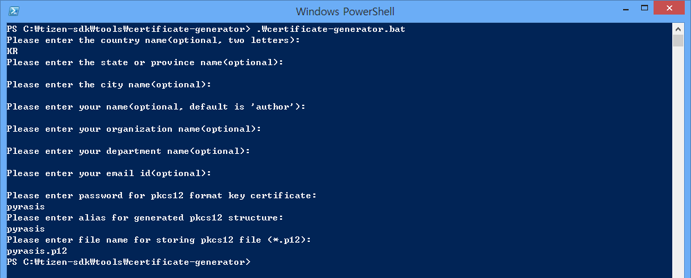
点击'Window'->'Preference'->'Tizen SDK'->'Secure Profiles'
Create Workspace in cocos2d-x/samples/Cpp/{SampleName}或者
Create Workspace in cocos2d-x/samples/Cpp/TestCpp如果设置路径不正确，则无法使用断点（breakpoint）
点击'File'->'Import'->'Tizen'->'Native Projects'->'Next'
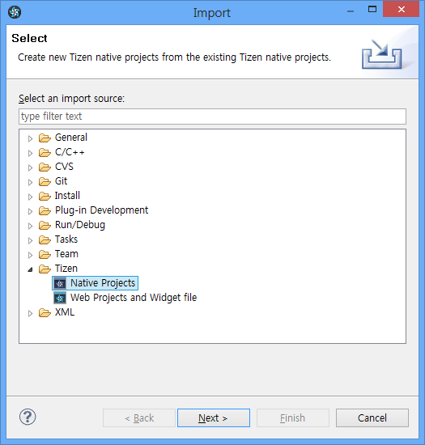
点击“Browse”选择cocos2d-x根路径，勾上以“proj.tizen”结尾的项目，点击“Finish”完成。
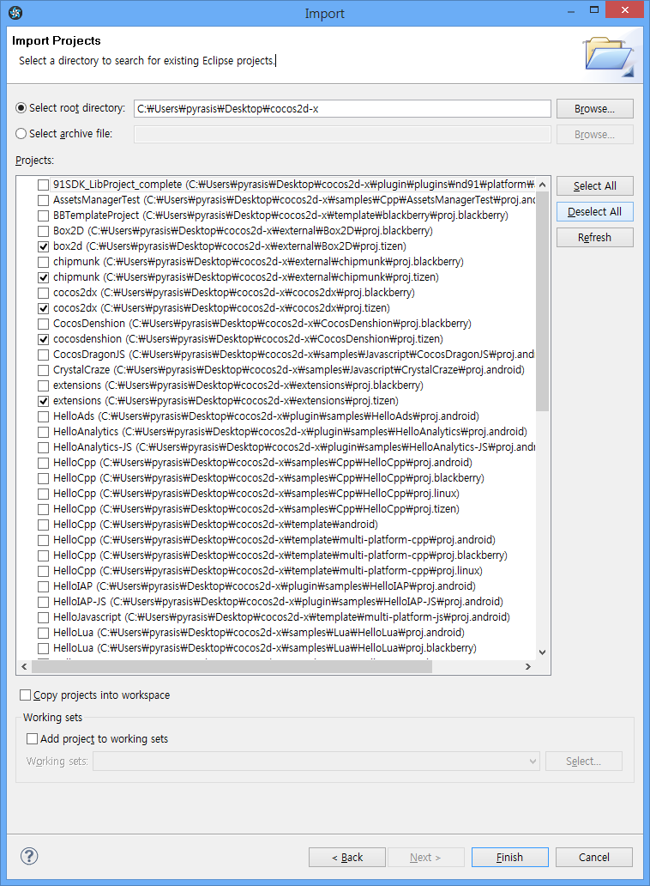
cocos2d-x/external/Box2D/proj.tizen
cocos2d-x/external/chipmunk/proj.tizen
cocos2d-x/cocos2dx/proj.tizen
cocos2d-x/CocosDenshion/proj.tizen
cocos2d-x/extenshions/proj.tizen
cocos2d-x/samples/Cpp/TestCpp/proj.tizen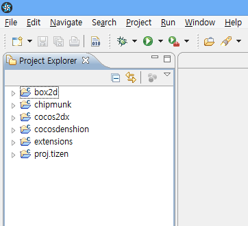
将cocos2d-x/samples/Cpp/HelloCpp/Resources/.复制到cocos2d-x/samples/Cpp/HelloCpp/proj.tizen/res目录下。
右键单击“proj.tizen”项目，选择“Run as”（运行方式）再选择“Run Configurations”（运行配置）
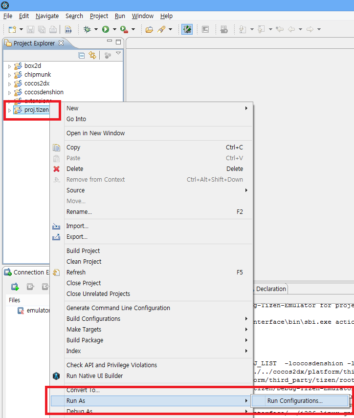
右键单击“Tizen Native Application”然后选择“New”。
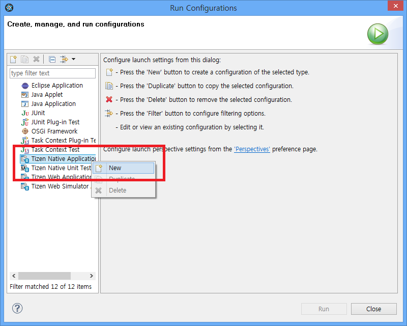
点击“Run”。
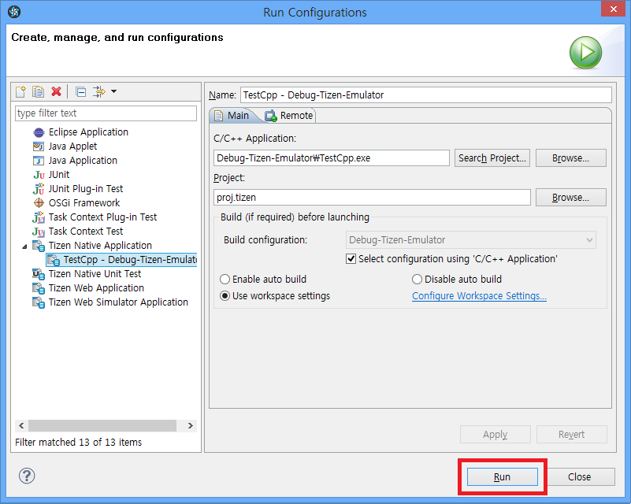
TestCpp测试项目正在运行。如图所示。
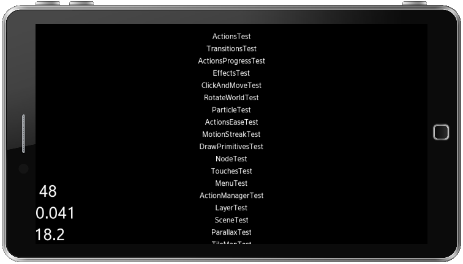
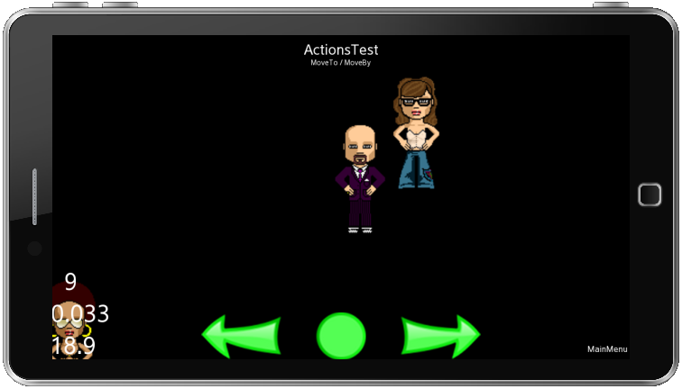
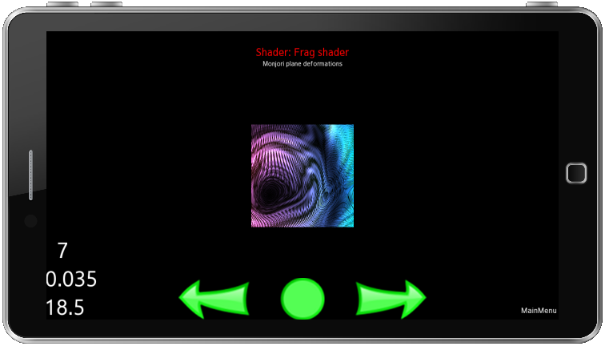
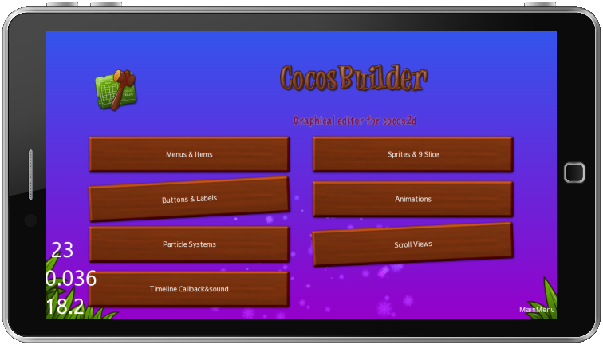
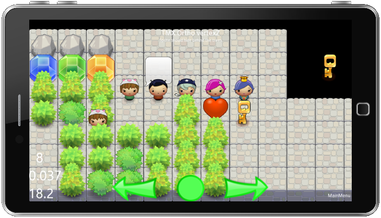
如果你是在“cocos2d-x/samples/Cpp/HelloCpp”路径下创建工作空间并导入“proj.tizen”项目，你会看到如下所示。
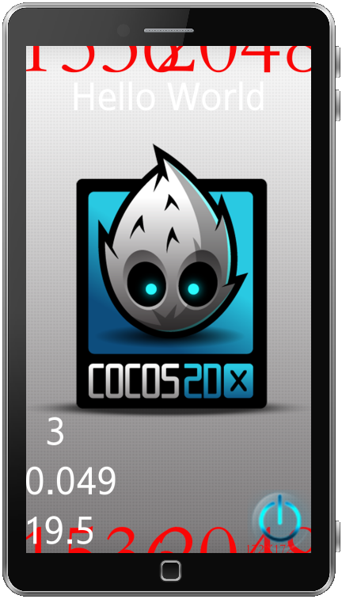